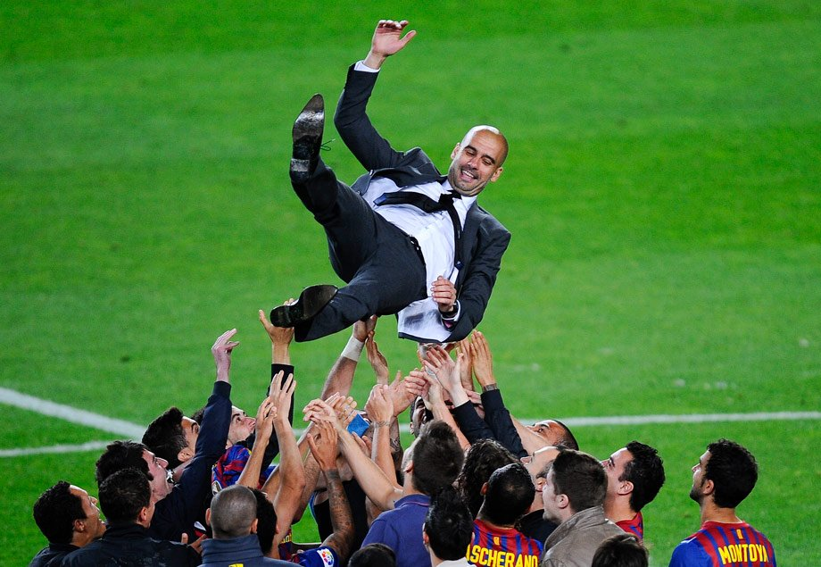

Хави — не «новый Гвардиола»
для «Барселоны». Есть более точный ориентир
Разбираемся, как правильно оценивать работу Хави: с учётом контекста и без ложных ожиданий.
Оказавшись в «Барселоне», Хави столкнулся со множеством обстоятельств, которые он не может изменить. Например, с желанием Усмана Дембеле, зарабатывать € 20 млн в год – что для «Барселоны» означает расходы в € 40 млн в год, учитывая налоги. Или, например, с очередной травмой Ансу Фати, после которой тот заплакал прямо у Хави в объятьях. Или даже с нежеланием того же Фати делать операцию, на которой настаивают и медштаб, и сам Хави. Список длинный. И где-то посреди этого списка, ближе к хвосту (потому что вряд ли это имеет практическое значение для тренера) ещё одно обстоятельство. На которое Хави повлиять не в состоянии. Это сравнения с Хосепом Гвардиолой.
Их сравнивали ещё до того, как Хави возглавил «Барселону». В комментариях романтики желали успеха, какого добился Пеп, а реалисты призывали не ждать такого же успеха, учитывая стартовые условия. Но показательно, что для всех Гвардиола был точкой отсчёта. И успехи, и неудачи Хави меряют по шкале Гвардиолы.
Наверное, это было неизбежно. Один из умнейших игроков своего времени, управляющий игрой за счёт интеллекта, а не атлетизма, возвращается в родную кризисную команду как тренер. Чтобы вернуть ей не только силу, но и стиль. Да ещё и президентом оба раза был Жоан Лапорта. Совпало? Всё, этого достаточно. Хотя на самом деле набор произвольно выбранных фактов даёт максимально искажённую картину (кстати, это универсальное правило работает не только в футболе).
Достижения Хави в сборной Испании
- Олимпийские игры Сидней 2000гсеребро
- Кубки конфедераций ЮАР 2009г бронза
Бразилия 2013г серебро - Чемпионаты мира ЮАР 2010г золото
- Австрия/Швейцария 2008г золото
Польша/Украина 2012г золото